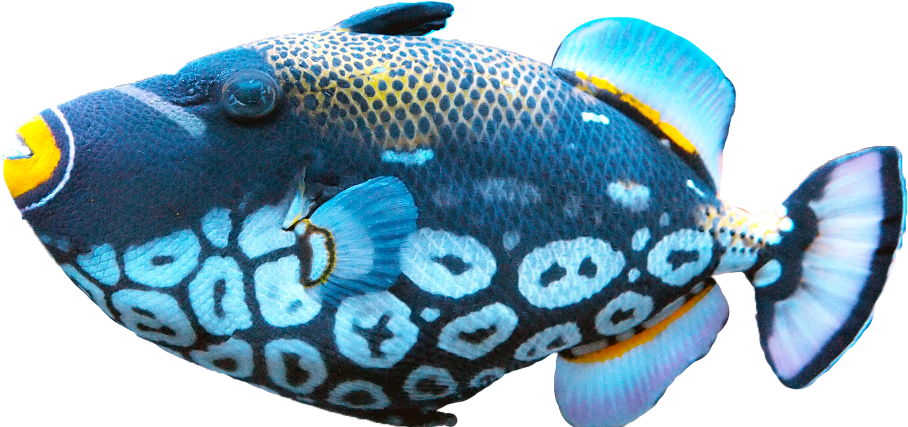
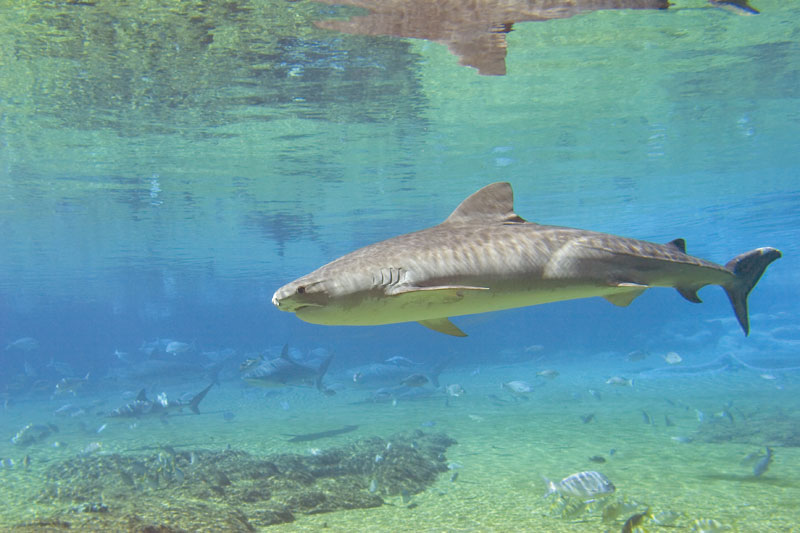

Fish hare gill-bearing aquatic craniate animals that lack limbs with digits.
They form a sister group to the tunicates, together forming the olfactores. Included in this definition are the living hagfish, lampreys, and cartilaginous and bony fish as well as various extinct related groups.
Tetrapods emerged within lobe-finned fishes, so cladistically they are fish as well. However, traditionally fish are rendered paraphyletic by excluding the tetrapods (i.e., the amphibians, reptiles, birds and mammals which all descended from within the same ancestry).
Because in this manner the term "fish" is defined negatively as a paraphyletic group, it is not considered a formal taxonomic grouping in systematic biology, unless it is used in the cladistic sense, including tetrapods.[1][2] The traditional
term pisces (also ichthyes) is considered a typological, but not a phylogenetic classification.
(such as sharks) became formidable marine predators rather than just
the prey of arthropods.
Rainer Froese, born 25 August 1950 in Wismar, Germany, is a senior scientist at the Helmholtz Center for Ocean Research in Kiel, formerly the Leibniz Institute of Marine Sciences, and a Pew Fellow in Marine Conservation
Fish, any of approximately 34,000 species of vertebrate animals (phylum Chordata) found in the fresh and salt waters of the world. Living species range from the primitive
jawless lampreys and hagfishes through the cartilaginous sharks, skates, and rays to the abundant and diverse bony fishes. Most fish species are cold-blooded; however, one species, the opah (Lampris guttatus), is warm-blooded.
GENERAL FEATURES
Living fishes represent some five classes, which are as distinct from one another as
are the four classes of familiar air-breathing animals—amphibians, reptiles, birds, and mammals.
AS For example, the jawless fishes (Agnatha) have gills in pouches and lack limb girdles. Extant agnathans are the lampreys and the hagfishes
. As the name implies, the skeletons of fishes of the class Chondrichthyes (from chondr, “cartilage,” and ichthyes, “fish”) are made entirely of cartilage. Modern fish of this class lack a swim bladder, and their scales and teeth are made up
of the same placoid material. Sharks, skates, and rays are examples of cartilaginous fishes. The bony fishes are by far the largest class. Examples range from the tiny sea horse to the 450-kg (1,000-pound) blue marlin, from th
e flattened soles and flounders to the boxy puffers and ocean sunfishes. Unlike the scales of the cartilaginous fishes, those of bony fishes, when present, grow throughout life and are made up of thin overlappin
g plates of bone. Bony fishes also have an operculum that covers the gill slits.
 Distribution and abundance
Almost all natural bodies of water bear fish life, the exceptions being very hot thermal ponds and extremely salt-alkaline lakes, such as the Dead Sea in Asia and the Great Salt Lake in North America. The present distributi
on of fishes is a result of the geological history and development of Earth as well as the ability of fishes to undergo evolutionary change and to adapt to the available habitats. Fishes may be seen to be distributed according to
habitat and according to geographical area. Major habitat differences are marine and freshwater. For the most part, the fishes in a marine habitat differ from those in a freshwater habitat, even in adjacent areas, but some, such
as the salmon, migrate from one to the other. The freshwater habitats may be seen to be of many kinds. Fishes found in mountain torrents, Arctic lakes, tropical lakes, temperate streams, and tropical rivers will all differ from each other,
both in obvious gross structure and in physiological attributes. Even in closely adjacent habitats where, for example, a tropical mountain torrent enters a lowland stream, the fish fauna will differ. The marine habitats can be divid
ed into deep ocean floors (benthic), mid-w
ater oceanic (bathypelagic), surface oceanic (pelagic), rocky coast, sandy coast, muddy shores, bays, estuaries, and others. Also, for example, rocky coastal shores in tropical and temperate regions will have different fish faunas, even w
hen such habitats occur along the same coastline.